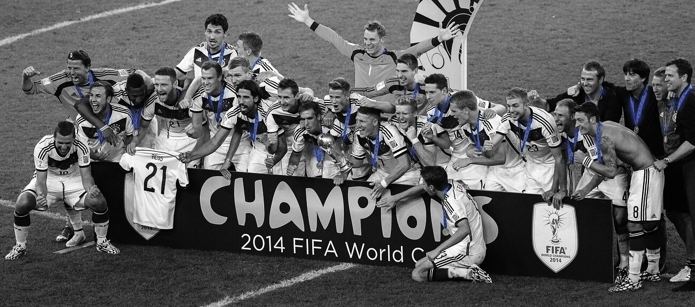

CASA Y FICHAS: RECREACIÓN · FOTOS: AGÊNCIA BRASIL (CC BY 3.0 BR), MODIFICADAS
BRASIL · JUNIO 2014
TARJETA DE HABITACIÓN
HOTEL
RECREACIÓN
SIN HOTEL
CASAS
0
HABITACIONES
BANQUILLO Y LISTA: RECREACIÓN
CONSEJO DE JUGADORES
CASAS Y PUNTOS: RECREACIÓN · UN PUNTO, UN JUGADOR
CAMPEONES

MARACANÁ · 13/7/2014
FOTO: DANILO BORGES / PORTAL DA COPA · CC BY 3.0 (MOD.)
SEMIFINAL · BRASIL
7-1
FINAL · ARGENTINA
1-0
Fotos: Danilo Borges/Portal da Copa (CC BY 3.0) y Agência Brasil/Marcello Casal Jr (CC BY 3.0 BR), modificadas, vía Wikimedia Commons. Casas, ferry y fichas: recreación.